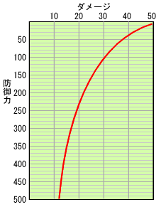

プレイヤーがモンスターからの攻撃を受けた際のダメージについて示します。
| ● ダメージ計算式 | ||
| モンスターからの攻撃を受けると、以下の計算式によってプレイヤーが受けるダメージを計算します。 | ||
|  特定の攻撃による防御力とダメージの相関 |
||
| A × B − （ A × B × P ） ÷ （ P ＋ 80 ） A：モンスターの攻撃力 B：モンスターの攻撃力倍率 P：プレイヤーの防御力の半分の値 |
||
| 通常はこの計算結果がプレイヤーが受けるダメージとなりますが、属性攻撃の場合は、プレイヤーの防具の その属性への耐性値によって、ダメージが軽減（あるいは増大）します。 例えば、耐性値が +10 なら 10％軽減、-5 なら 5％増大ということです。 例１： テオ・テスカトルの火炎プレス攻撃 （攻撃力：100、火属性、攻撃力倍率を150％とする） プレイヤーの防御力が 186、火耐性が+10の場合 |
||
| （100 ×150％ − （100 × 150％ × 93 ） ÷ （ 93 ＋ 80 ）） × 90％ ＝ 62 ダメージ | ||
例２： リオレイアの突進攻撃 （攻撃力：64、属性なし、攻撃力倍率を150％とする） プレイヤーの防御力が 186の場合 |
||
| 64 ×150％ − （64 × 150％ × 93 ） ÷ （ 93 ＋ 80 ） ＝ 44 ダメージ | ||
| ● ダメージの自然回復 | ||
| ダメージを受けることによって減った体力は、減った量の半分程度までは時間の経過と共に自然回復します。 通常は、2 秒毎に体力が１回復しますが、以下のスキルはこの回復速度に影響を与えます。 ダメージ回復速度+1： 2/3 秒毎に１回復 ダメージ回復速度+2： 1/2 秒毎に１回復 ダメージ回復速度-1： 6 秒毎に１回復 ダメージ回復速度-2： 8 秒毎に１回復 活力剤を使用してその効果がある時間帯は、２ずつ回復します。 |
||
| ● 攻撃に付加されている威力値と気絶値 | ||||||||||||||||||
| モンスターの攻撃には、威力値と気絶値という値が付加されています。 威力値は、以下のように、その攻撃をガードした時のリアクションに影響を与えます。
ガード性能スキルが発動していると、威力値が軽減（増大）します。 ガード性能+1： 威力値が 10減少する ガード性能+2： 威力値が 20減少する ガード性能-1： 威力値が 5増加する ガード性能-2： 威力値が 10増加する 気絶値は、攻撃を受けるたびにプレイヤーの体内に蓄積されていきます。蓄積された気絶値は、 時間の経過と共に減少しますが、蓄積量が５０以上になるとプレイヤーは気絶状態に陥ります。 気絶スキルが発動していると、蓄積量に影響を与えます。 気絶確率半減： 攻撃を受けた際の蓄積量が半分になる 気絶無効： 蓄積されなくなる 気絶倍加スキルは蓄積量とは関係ありませんが、気絶状態からの復帰時間が２倍になります。 |
||||||||||||||||||
| ● モンスターごとの攻撃力・属性・威力・気絶値 | ||
| モンスターの各攻撃の攻撃量・属性・威力・気絶値は、順次 モンスターデータ に追加していく予定ですが なにぶん数が多いため時間がかかるかもしれませんが、ご了承ください。 前作にも登場したモンスターについては、ほとんど変わっていないようです。 今作から登場した、テオ・テスカトルやクシャルダオラなどの古龍種は、突進のような物理攻撃のほとんどに 龍属性が付加されているようです。 これらのモンスターと戦う際には、龍耐性もある程度考慮したほうがよいと思われます。 |
||